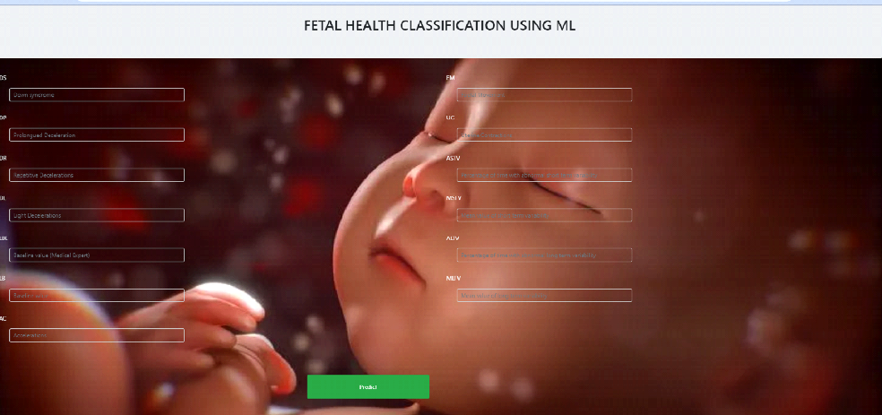

Final Year Project

Health complications during the gestation period have evolved as a global issue. These complications sometimes result in the mortality of the fetus, which is more prevalent in developing and underdeveloped countries. The genesis of machine learning (ML) algorithms in the healthcare domain have brought remarkable progress in disease diagnosis, treatment, and prognosis. Around 800 women die every day due to pregnancy and childbirth-related issues. Maternal health and fetal health are closely associated with each other because every year approximately 3 million newborn babies die.
So there is a need for proper care including the prediction of risk levels before, during and after the delivery for the safety of both mother and child. Data mining is a commonly used technique for processing enormous data. Researchers apply several data mining and machine learning techniques to analyse huge complex data, helping health care professionals to predict fetal health. Different algorithms are compared and the best model is used for predicting the fetal health.
The aim of the proposed method is to predict whether the gestation fetal is normal or not. This can be predicted by a machine learning method. The process starts from collecting the data. After collecting the dataset, it is pre-processed for removing the unwanted data from the dataset. Machine learning method is now used and mostly used in all the departments where it reduces the mistake. Many algorithms are used and the best one is used for predicting the fetal health.
Here the scope of the project is that integration of fetal health with computer-based prediction could reduce errors and improve prediction outcome. This suggestion is promising as data modelling and analysis tools, e.g., data mining, have the potential to generate a knowledge-rich environment which can help to significantly improve the quality of fetal health prediction. 24